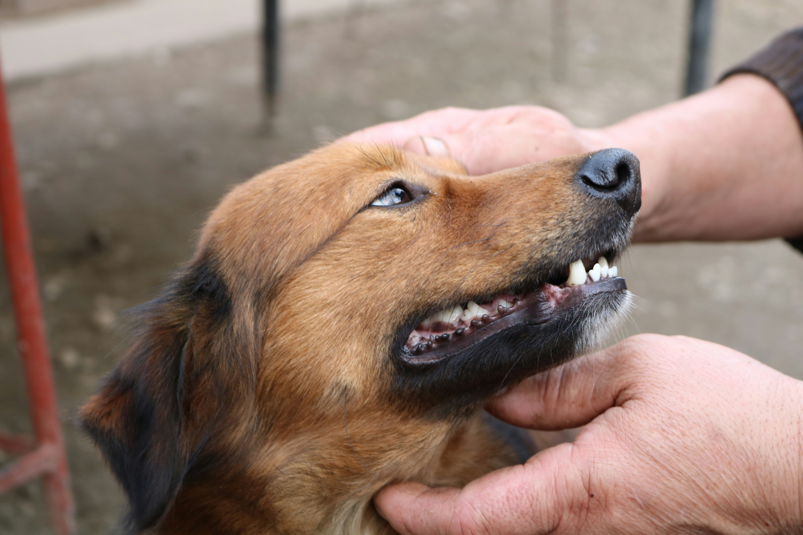
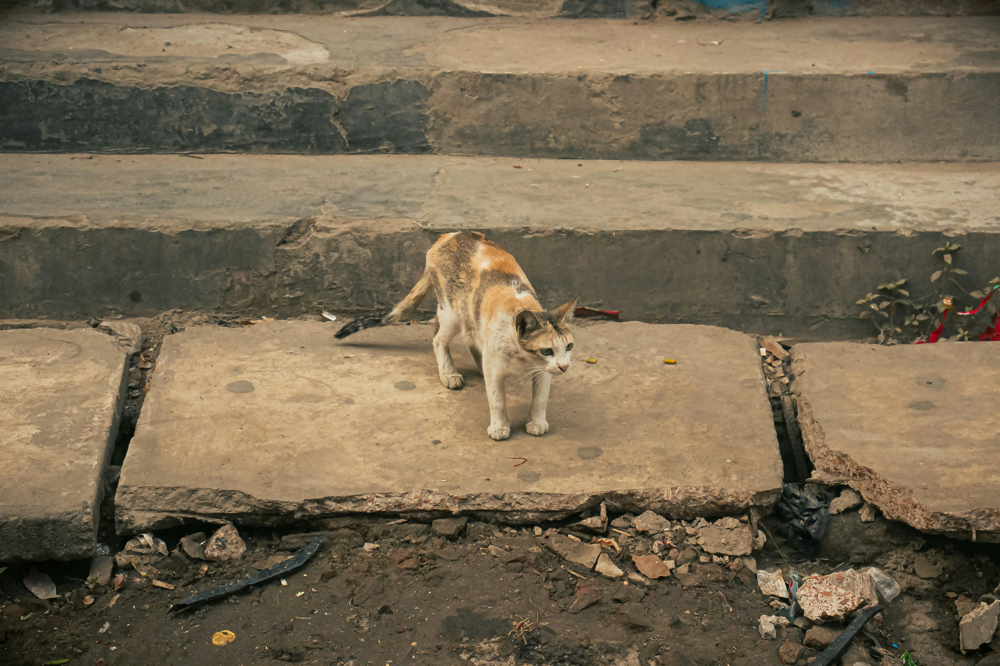
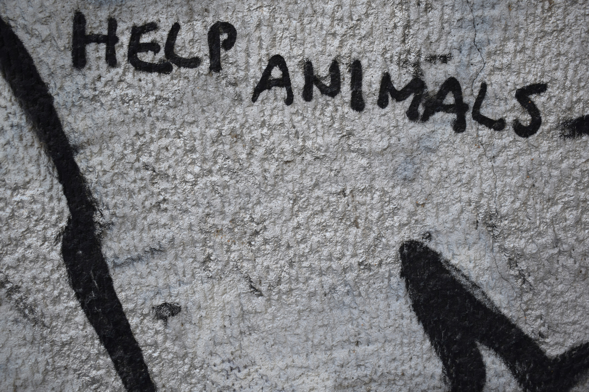
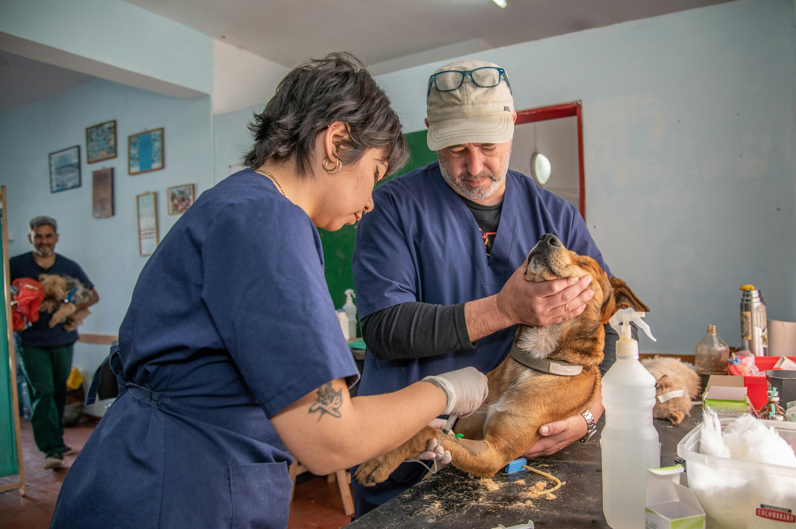

Ações simples no dia a dia
- Divulgue animais para adoção nas suas redes sociais.
- Fale sobre o assunto com amigos e familiares.
- Ensine crianças a respeitarem e cuidarem dos animais.
- Denuncie casos de maus-tratos ou abandono.
- Sempre que puder, ofereça água ou comida a um animal de rua.


O que fazer ao ver um animal de rua
- Avalie: ele está ferido, assustado, magro ou parece ter dono?
- Ferido? Leve a um veterinário. Há clínicas sociais em muitas cidades.
- Tem dono? Divulgue nas redes sociais ou procure por um microchip.
- Pode acolher? Abrigue temporariamente até achar um adotante.
- Não pode? Tire fotos, informe a localização e compartilhe.
Cobre políticas públicas e fiscalização
- Cobre campanhas de castração gratuitas e acessíveis.
- Reivindique centros de acolhimento e programas de adoção.
- Exija leis mais rígidas contra maus-tratos e abandono.
- Participe de audiências públicas ou petições online sobre o tema.
- Fale com vereadores ou deputados da sua região.


Apoie quem já está lutando pela causa
- Doe dinheiro, ração, medicamentos ou materiais de limpeza.
- Divulgue campanhas de adoção ou arrecadação.
- Seja voluntário, mesmo que por poucas horas semanais.
- Adote com responsabilidade, se tiver condições.
- Apoie iniciativas locais, que muitas vezes passam despercebidas.